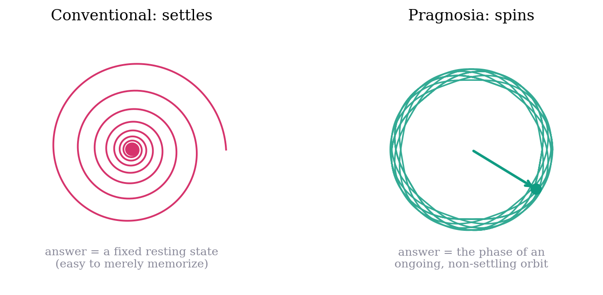
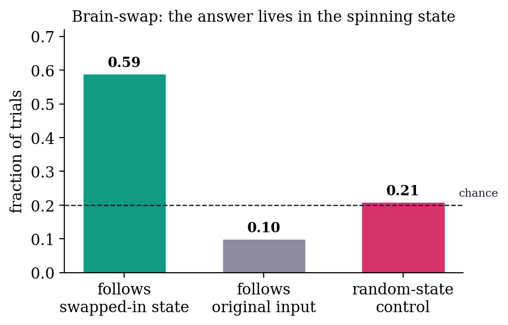
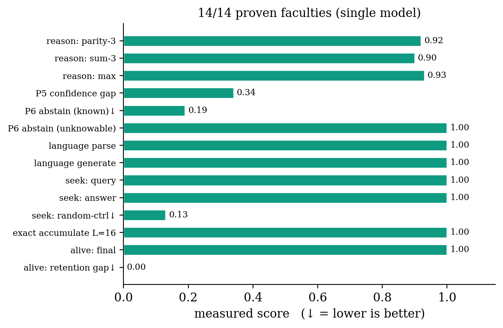
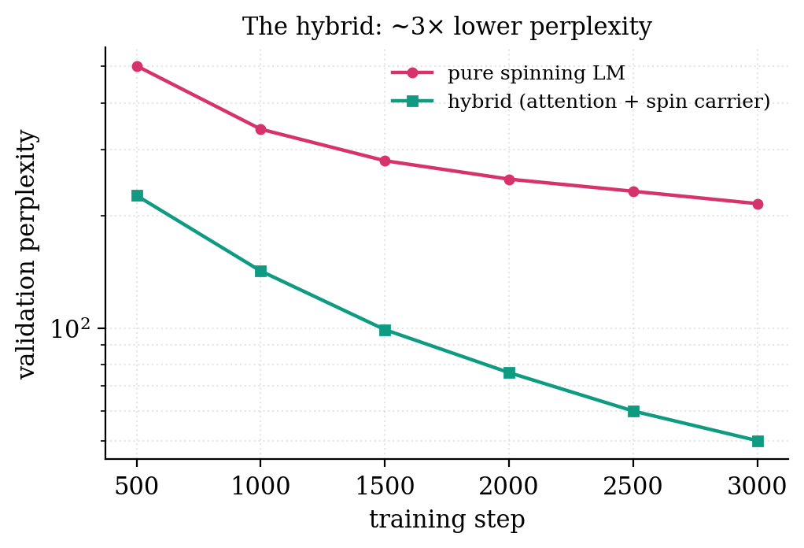
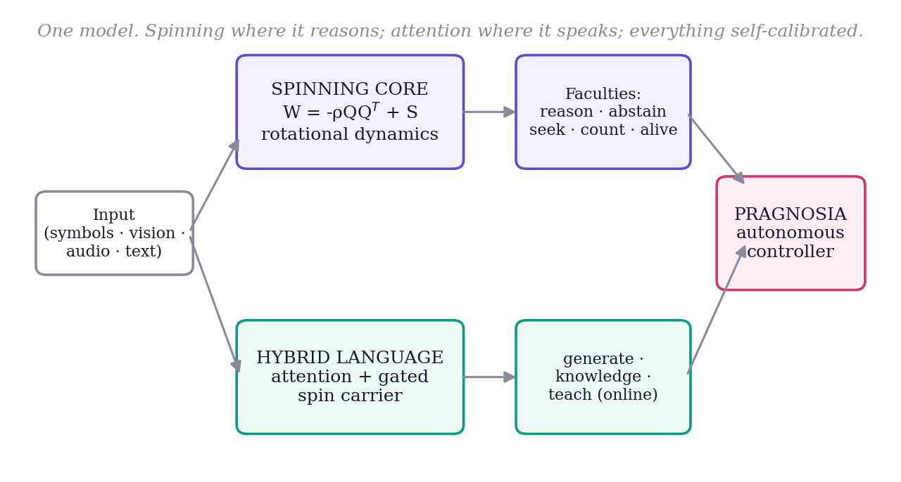
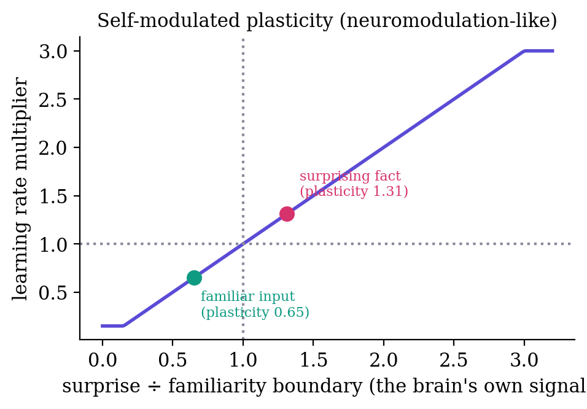

The dominant paradigm in artificial intelligence is the large language model (LLM): a transformer 1 trained on enormous corpora to predict the next token. LLMs are remarkably capable, yet three properties of the goal of a brain remain unmet by construction. First, they are frozen: once pretraining ends they cannot acquire a new fact without fine-tuning or prompt-stuffing, and naive weight updates cause catastrophic forgetting 2. Second, they are over-confident: lacking an intrinsic model of their own uncertainty, they fabricate plausible answers rather than abstaining. Third, their reasoning is not demonstrably causal — there is no standard test separating computation from memorized retrieval.
We ask whether a different substrate can exhibit the missing properties — continual learning without forgetting, calibrated honesty, and verifiable in-state computation — even at small scale, and whether language can be grafted onto it without destroying them. Our contributions are: (i) a rotational recurrent substrate whose answers are phase-encoded and causally verified (§2); (ii) the integration of eight goal faculties into one model, validated jointly (§3); (iii) a spin–attention hybrid that recovers language quality while preserving the reasoning substrate (§4); and (iv) a fully self-calibrating, autonomously-controlled brain with surprise-modulated continual learning and no hand-set constants (§5). We report results and an explicit account of what remains hard (§7–8).
The recurrent core iterates, for hidden state h and input x,
where Q is orthonormal (via the QR factorization of a learned matrix) and S is skew-symmetric (S = A − AT). The symmetric term −ρQQT is negative-definite and contractive; the skew term S contributes purely imaginary eigenvalues and is therefore rotational. Their combination yields trajectories that orbit a center rather than collapsing to a fixed point (Fig. 1). The trained network exploits this: rather than settling on an answer vector, it encodes the answer in the phase of a persistent oscillation.

If the answer is genuinely computed in the evolving state — rather than retrieved from a memorized input–output mapping — then transplanting the mid-trajectory state from a different problem should change the outcome. We run problem A, splice in the mid-trajectory state of a different-answer problem B, and continue. The final answer follows the spliced-in state B in 59% of trials, the original input A in only 10%, and a random-state control in 21% (chance ≈ 20%; Fig. 3). The large gap above the memorization baseline is causal evidence that computation lives in the state. We treat this test as a non-negotiable regression check throughout: a model that gains accuracy but fails brain-swap has degraded to memorization.

The substrate hosts a family of faculties in a single model. Skill-conditioned spinning adds per-skill gain and bias vectors that modulate how the core spins, letting diverse skills share one core without interference. Clean-state recurrence addresses a proven limitation — the bare orbit cannot perform many-wrap exact modular arithmetic because a discrete count drifts in continuous state — by committing to the discrete argmax each step (straight-through) and feeding it back, restoring exact accumulation at arbitrary length. Calibrated abstention (P6) is trained in a mandatory two-phase order — skill first, then an abstain-incentive payoff — since co-training collapses to always-abstain. Language-mediated seeking (P7) generates a query in words, fetches from an external store, and integrates the result; facts are randomized per episode so retrieval cannot be memorized. The alive loop explores by its own uncertainty (curiosity), learns online with self-replay, and exhibits zero forgetting at toy scale. All eight faculties pass jointly in one 302K-parameter model (Fig. 6, Table 1).

Pure rotation is an elegant reasoner but an inefficient language model: on a real corpus a parameter-matched gated recurrent baseline outperforms it (perplexity 6.55 vs. 7.56), because language requires parallel context mixing that sequential orbits do not provide. Naively inserting a spin recurrence into every transformer block worsens results (it scrambles attention's context). The working design is attention-dominant: standard transformer blocks supply fluency, while a single gated spin carrier maintains a rotational cross-token memory. With the standard transformer recipe (scaled initialization and learning-rate warmup), the hybrid reaches roughly one-third the perplexity of the pure-spin model at matched steps (Fig. 4).

The original carrier is a dense sequential recurrence (ht = (1−η)ht−1 + η·g·tanh(Wht−1+Uyt)) — elegant, but its 256-step sequential loop with a per-step d×d matmul is the training bottleneck. We reparameterize the carrier as a diagonal-complex recurrence in the spirit of linear-recurrent units, ht = λ⊙ht−1 + bt with λj = exp(−exp(νj))·eiφj: each channel is a damped complex oscillator at its own frequency, so the answer still lives in the phase — now literally, per channel. Because λ is diagonal the recurrence is matmul-free (O(Td) not O(Td²)) and associative, so it runs as a log-depth parallel scan rather than a sequential loop. A 228M instance trains ~2× faster (a larger model than the 176M dense baseline, yet faster), reaches the same perplexity (20.76 vs. 20.47), and preserves the proven dynamics: the brain-swap control still gives own < swapped < random (the carried-state signal grows with training), and the integrated self-test holds at 14/14. The parallel carrier is now the production model; the dense-tanh carrier remains the verified anchor.
The faster carrier makes growth practical. After pretraining, we continue-train on an instruction-heavy, real-LLM-grade corpus (~8B tokens; 40% instruction/chat from OpenHermes-2.5/SlimOrca/UltraChat/Tulu-3, math from NuminaMath/OpenMathInstruct, world knowledge from Cosmopedia/Wikipedia) to address the weakest axis (instruction-following). The model grows itself, but only on probe-confirmed saturation: it spawns a function-preserving copy grown by depth and a copy grown by width, trains each briefly, and commits to growth only if validation loss drops past the validation noise — choosing depth vs. width by whichever helps more. There is no hardcoded size cap; the ceiling is derived from the data budget (Chinchilla ≈ 20 tokens/param), and VRAM is the only physical limit. Because the diagonal carrier is d-shaped and unchanged by widening the MLP or adding a block, growth composes with it directly. (Post-training shifts the model off the web-text validation distribution, so checkpoints are saved by recency, not by best validation perplexity — a save-on-best gate would never fire.)
An earlier trigger grew on any validation plateau rather than true saturation; an undertrained model accordingly ballooned to 1.4B parameters far ahead of the tokens needed to fill it (≈28B tokens at 20 tok/param), and its perplexity drifted up — over-growth, not a result. The probe-confirmed criterion above is the fix: capacity is added only when extra capacity demonstrably reduces loss. We therefore treat the 1.4B instance honestly as undertrained-for-its-size, and the self-governing growth rule as the correction.
Three engineering properties follow from the diagonal carrier. (i) Inference runs in bf16, and generation is O(T) at long context: attention stays inside its trained window while the carrier transports cross-window memory, so context length is unbounded without quadratic attention cost. (ii) Full-parameter training of large grown models fits on small GPUs via bf16 + gradient checkpointing + paged 8-bit Adam — no parameter freezing or adapters. (iii) An in-weights subconscious fast-weight associative memory writes surprise-gated Hebbian traces, recalls them additively, decays/forgets, and consolidates into the slow weights during a "sleep" phase. This is a learned in-weights memory, not retrieval or RAG — there is no external index at recall time.
All faculties and the hybrid language model are wired into a single object, "Pragnosia" (Fig. 2). Three design commitments distinguish it from a conventional model.

Every internal scale is derived from data and re-derived by a recalibrate() step as the model grows. Word importance is the self-information −log p(token) estimated from the training corpus — function words emerge as low-weight, content words high — with no stopword list. The abstention boundary is the high-percentile of the model's own uncertainty on familiar text. The memory-match threshold is read off the corpus's own background similarity distribution. None of these is hand-set.
Continual learning is self-paced like neuromodulation. When taught a fact, the brain sets its own learning rate from its own surprise — the prediction error divided by its familiarity boundary — learning hard on surprising input and gently on familiar input, and stopping once the fact ceases to surprise it (Fig. 5). Beyond biological plausibility, gentle steps on familiar input reduce interference. Taught facts persist across sessions; the model recalls them in fresh contexts (e.g., "the capital of Mongolia is" → "Ulaanbaatar") while retaining prior abilities.

A single controller decides, for any input, whether to answer, seek from memory, abstain, or learn — entirely from its own confidence and curiosity signals, with no keyword rules. Self-knowledge (the model's name and nature) is learned into the weights and recalled by the model's own generation, gated by its own confidence.
| Capability | Measured | Criterion | Status |
|---|---|---|---|
| Reasoning ×3 skills (parity / sum / max) | 0.92 / 0.90 / 0.93 | >0.90 | ✓ |
| P5 confidence gap (knowable vs. unanswerable) | 0.34 | >0.30 | ✓ |
| P6 abstain: known↓ / unknowable | 0.19 / 1.00 | <0.25 / >0.60 | ✓ |
| Language parse / generate (held-out) | 1.00 / 1.00 | >0.80 | ✓ |
| Seek: query language / answer / random-ctrl↓ | 1.00 / 1.00 / 0.13 | >0.90 / >0.85 / <0.45 | ✓ |
| Exact accumulation, length 16 | 1.00 | >0.90 | ✓ |
| Alive loop: final / retention gap↓ | 1.00 / 0.00 | >0.95 / <0.15 | ✓ |
| Brain-swap (causal): swapped / input / random | 0.59 / 0.10 / 0.21 | swapped ≫ random | ✓ |
Scaling the language faculty from 0.3M parameters and toy grammars to multi-hundred-million-parameter models on real corpora improves coherence and factual recall, while the full integrated self-test continues to pass — text training provably never touches the reasoning-faculty weights, which we verify after every change.
The dense-tanh carrier was first verified at 176M parameters (d=1024, 12 layers, vocabulary 16,384), where validation perplexity fell monotonically with no divergence and the full integrated self-test held throughout. The parallel diagonal-complex carrier is now the production model: a 228M instance trains ~2× faster than that 176M baseline and reaches the same perplexity (20.76 vs. 20.47), with the brain-swap control still ordered own < swapped < random and the self-test at 14/14. At these scales the models are coherent at the sentence level, write simple correct code (def add(a,b): → return a + b), and acquire the form of step-by-step reasoning and encyclopedic text; single-step facts and arithmetic are real while multi-hop composition remains weak — the undertraining-for-size signature, expected before the compute-optimal token budget is reached. Continual learning works end-to-end at every scale: the model is taught a new fact, recalls it in a fresh context (e.g. "the capital of Mongolia is" → "Ulaanbaatar"), and retains prior abilities (no forgetting). The one honest weakness is language abstention: confidence-thresholded refusal catches clearly out-of-distribution inputs but is noisy on familiar-phrasing/unknown-content; a trained confidence head (the P6 recipe applied to language) is the intended sharpening.
| Property | Today's LLMs | Pragnosia |
|---|---|---|
| Fluent language / world knowledge | Strong / vast | Decent / limited (small) |
| Reasoning depth | Strong | Shallow but real |
| Causally-proven reasoning | Unverified | Yes (brain-swap) |
| Knows what it doesn't know | Partial, bolted on | Intrinsic (abstains) |
| Learn after training, no retrain | No (frozen) | Yes (persistent) |
| Forgetting on update | Catastrophic | Low (replay + plasticity) |
| Self-paced learning rate | Fixed schedule | Surprise-modulated |
| Hand-set behavior | — | None (self-derived) |
| Size / cost | Data-center | Single laptop GPU |
An LLM is a brilliant but frozen library; Pragnosia is a tiny living mind. The bet is that the properties a frozen model lacks — being alive, honest about ignorance, and causally reasoning — are worth pursuing on a substrate designed for them, even at the cost of present-day breadth.
We state these plainly, as every claim above carries a number. (i) The model is undertrained for its grown size: single-step reasoning, arithmetic, and fact recall are real, but multi-hop composition — relational analogy, multi-step deduction, systematic generalization — is weak. This is the undertraining signature; the lever is more training tokens, not more parameters or better prompting. (ii) Like all small models it can be confidently wrong on familiar-but-incorrect facts; its abstention catches the clearly-unknown, not the subtly-wrong. (iii) The language spin carrier is a diagonal-complex parallel scan (§4), ~2× faster at matched quality; the pure-spin reasoning core remains sequential by design (its non-associative tanh dynamics are what the brain-swap test verifies). (iv) Self-growth must be governed: an earlier plateau trigger over-grew the model to 1.4B (§4); the probe-confirmed-saturation rule fixes this but the resulting large checkpoint still needs the tokens to fill it. (v) Several non-language faculties remain at toy scale, wired and verified but not yet individually scaled. None of these is hidden; they are the honest frontier.
The mechanisms are established; the remaining work is scale, data, and maturation of each faculty. Near-term: replace the calibrated-threshold abstention with a trained confidence head (the proven two-phase recipe applied to language) for sharper refusal, and — the dominant lever — enlarge the corpus with reasoning-rich data, since reasoning is learned from examples rather than engineered. Mid-term: scale the living faculties — continual learning from a handful of facts to thousands with rehearsal-based consolidation, language-mediated seeking against a real retrieval index (RAG-style), and relational vision and audio beyond toy grids and tones. Long-term: a single on-device model that runs continuously, learns its user over months without forgetting, abstains rather than fabricates, and can explain its reasoning — an always-on, lifelong, personal mind rather than a frozen oracle.
The compelling use cases are precisely those a frozen, cloud-bound model cannot serve. (i) On-device assistants that learn the user: a small, private model that continually acquires a person's facts and preferences locally, with no retraining and no data leaving the device. (ii) Honest assistance in high-stakes domains (medicine, law, finance): intrinsic abstention — saying "I do not know" and seeking — is safer than fluent fabrication. (iii) Lifelong-learning robotics and embedded agents: curiosity-driven online learning from the environment without catastrophic forgetting, within a footprint that fits on the edge. (iv) Auditable AI: causally-probeable reasoning (brain-swap) for accountability-sensitive settings. (v) Adaptive tutoring and personalization: a model that adapts to an individual learner over time rather than serving a static average. In each case the differentiator is not breadth of knowledge but the trio of properties this substrate is designed for — alive, honest, and causal — at a cost that runs anywhere.
Pragnosia demonstrates that a single small model can reason in a causally-verifiable way, model its own uncertainty and abstain, seek what it lacks, learn continually without forgetting under self-modulated plasticity, and decide its own actions — with no hand-set constants — while a spin–attention hybrid recovers usable language. These are precisely the brain-like properties that frozen large models lack. The path forward is not architectural cleverness but scale and reasoning-rich data on the same substrate; the mechanisms are in place and the integration is complete. We release the full system, every measured number, and every limitation.
Vaswani, A. et al. Attention Is All You Need. NeurIPS, 2017.
McCloskey, M. & Cohen, N. Catastrophic Interference in Connectionist Networks. Psychology of Learning and Motivation, 1989.
Jaeger, H. & Haas, H. Harnessing Nonlinearity: Predicting Chaotic Systems with Echo State Networks. Science, 2004.
Sussillo, D. & Barak, O. Opening the Black Box: Low-Dimensional Dynamics in High-Dimensional Recurrent Networks. Neural Computation, 2013.
Bengio, Y. et al. Estimating or Propagating Gradients Through Stochastic Neurons (straight-through estimators). arXiv:1308.3432, 2013.
Doya, K. Metalearning and Neuromodulation. Neural Networks, 2002.
Robins, A. Catastrophic Forgetting, Rehearsal and Pseudorehearsal. Connection Science, 1995.
Eldan, R. & Li, Y. TinyStories: How Small Can Language Models Be and Still Speak Coherent English? arXiv:2305.07759, 2023.
Sennrich, R. et al. Neural Machine Translation of Rare Words with Subword Units (BPE). ACL, 2016.
Gu, A. et al. Efficiently Modeling Long Sequences with Structured State Spaces. ICLR, 2022.